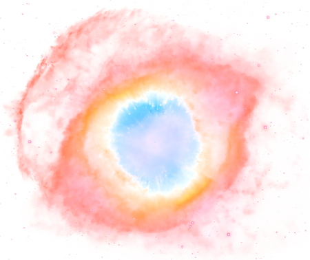

one of my subject to talk about is Astronomy because it always tick my curiousity how our universe was created and how the celestial bodies work, while also mesmerizing the beauty of the space. the possibility of exploring undiscovered celestial bodies is vast and the our laws of physics(or Astrophysics) in space are still theoretical therefore our understanding in space is not absolute but this means that exploration and further studying is always open. Regardless, the beauty of space is a top notch
Arduino is one of my recent interest. discussing how Arduino works, projects and ideas always take my attention. i have also interest in Raspberry Pi because it has Linux OS(which im also interest) but so far i have never try. my current works are Motor Arduino, Sensors and ESP32s